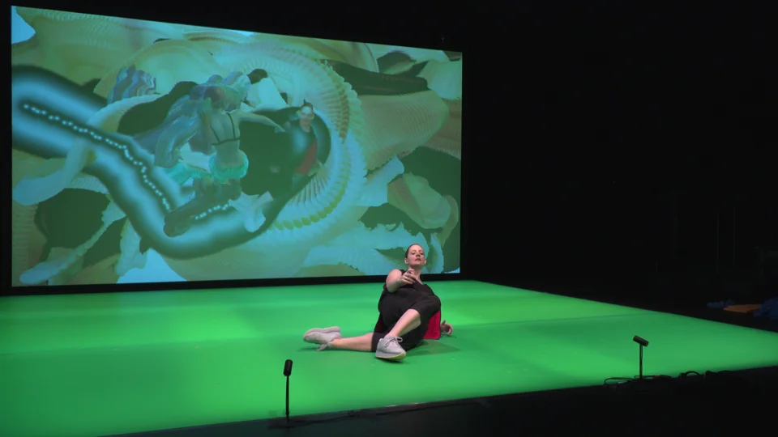

Motion Aftereffect in Winnipeg January 2026 & Quebec City in February 2026!
Winnipeg's Contemporary Dancers January 30, 31 at 7:30 and Feb 1st 4pm https://www.winnipegscontemporarydancers.ca/season/2025-2026/#season-3 Mois Multi - festival international d’arts multidisciplinaires et électroniques February 12 and 13, 2026 at 8pm https://moismulti.org/
